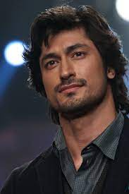
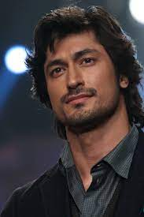
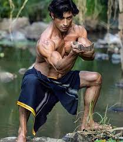

Vidyut Jammwal (born: 10 December 1981) is an Indian Hindi actor. He was born in a Rajput family of Jammu. He is a descendant of Dogra Rajput Raja Hari Singh, the king of Kashmir. He is known for his roles in action films. He is also a stunt artist and trained martial artist. He has trained in the Indian martial art Kalaripayattu since the age of three . He mainly works in Hindi films. Apart from Hindi films, he has also worked in Tamil and Telugu films. He has done many films in Hindi like his first film was Commando, after which he has made Commando 2, Junglee, and Commando 3. Jamwal was born in a Rajput family in Jammu , Jammu and Kashmir . They are descendants of King Dogra Rajput Maharaj Hari Singh of Kashmir. He is one of three children born to an Army officer, and lived in different parts of India (due to his father's transferable job) and trained in Kalaripayattu at an ashram in Palakkad, Kerala , when he was three years old. . , which was run by his mother.
He traveled to many countries training with martial artists in various forms, some of which find their basis in Kalaripayattu. After earning a degree in martial arts, Jamwal traveled to more than 25 countries, where he performed in live action shows. He participated in Gladrags as a contestant in the year 2000 and has been living in Mumbai since then. She was a model in Delhi since 1996, but after a disappointing career in modeling, she played her first role in the Telugu film Shakthi. He later landed his first role in a Bollywood film in Nishikant Kamat's Sena after an audition. Jammwal later starred as a hero in the Hindi-language film Commando and performed real-world war-based action without the aid of stuntmen. The film was first screened internationally at the Fantasia Film Fest in Montreal in July 2013, with screenings following. Fantastic Fest in Texas in September 2013. He received a positive response from international media and action directors, calling him India's answer to Bruce Lee and Tony Jaa. After the success of Commando, he played a sharpshooter cop in Tigmanshu Dhulla's Bullet Raja in 2014. She played a supporting role in the Tamil language film Arjaan opposite Suriya. In 2017, he starred in Commando 2, the sequel to Commando, which was a box office success. His next release that year was Baadshaho in which he played the role of Major Sehar Singh, the film did average business.